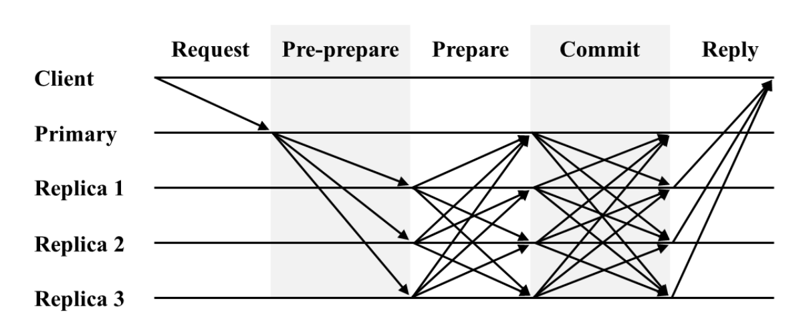
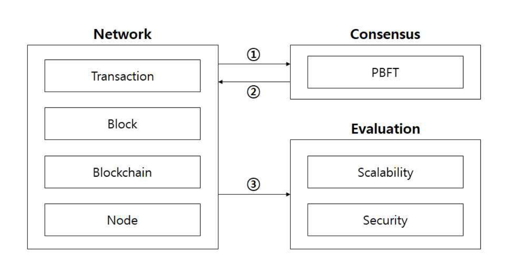
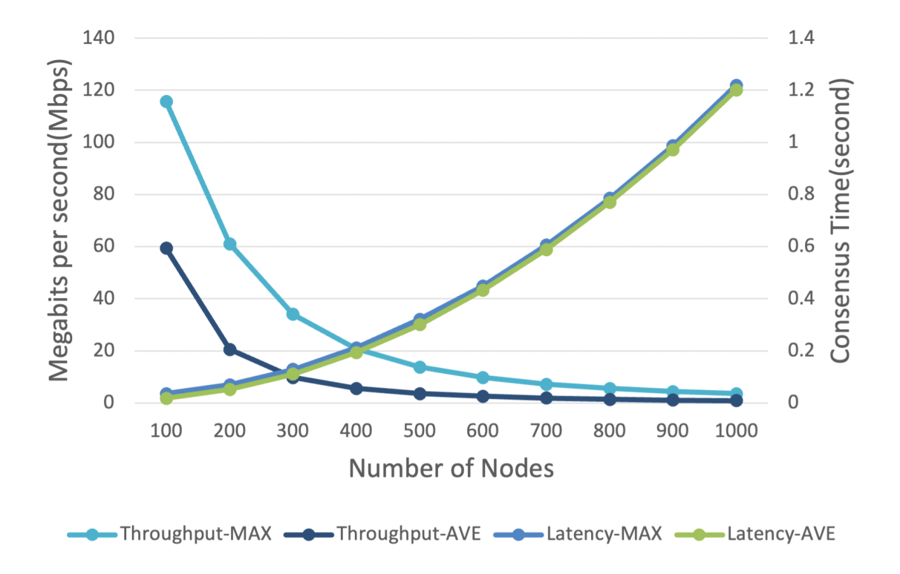
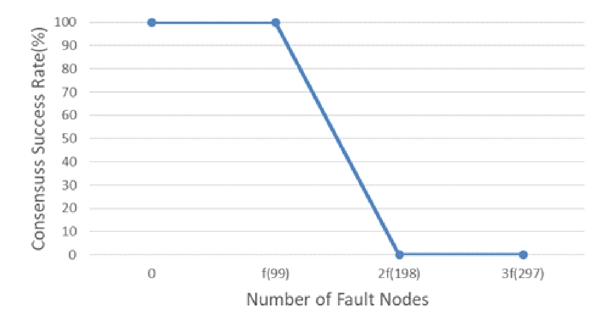

내용
PBFT와 그 개선안을 같은 기준으로 시험하고 비교할 방법이 부족했습니다.
- PBFT
- 일부 노드가 고장 나도 나머지가 같은 장부에 합의하게 하는 알고리즘입니다.
- 문제
- 모든 노드가 서로 메시지를 보내므로 노드가 늘수록 네트워크 부하가 커집니다.

Publication
연구마다 달랐던 PBFT 계열 합의 알고리즘의 평가 항목을 처리량, 지연시간, 내결함성으로 통일했습니다. 노드 수와 결함 조건이 달라도 같은 기준으로 비교할 수 있게 했습니다.
블록 1MB, 노드 100대 → 1000대, 정상 노드만
전체 300대, 블록 1MB. 결함 노드가 f(약 1/3)를 넘으면 급감하고 2f(198대)부터 전부 실패
100대 단위, Python 시뮬레이션
PBFT와 그 개선안을 같은 기준으로 시험하고 비교할 방법이 부족했습니다.

평가 기준을 셋으로 통일하고 합의 부분만 갈아 끼울 수 있는 평가 구조를 만들었습니다.

노드가 늘면 처리량이 급감했고, 결함 노드가 1/3을 넘으면 합의 성공률이 급감했습니다.


PBFT 계열을 같은 지표로 재는 평가 구조와 기본 PBFT의 기준 수치를 낸 논문입니다.
이 연구에서 측정한 PBFT의 한계가 석사과정의 rPBFT 연구로 이어졌습니다.
분산원장 합의: 학부연구생 때의 평가 연구에서 rPBFT까지